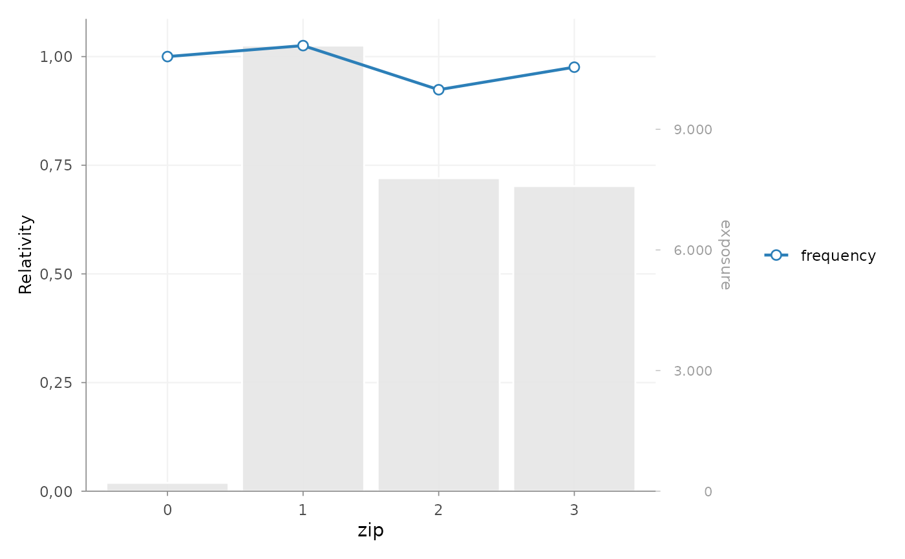

Compare fitted risk-factor effects graphically
Source:R/model_rating_table_plot.R
autoplot.rating_table.RdPlot the coefficients or relativities stored in a rating_table() object by
risk factor. Multiple fitted models can be compared, exposure can be shown as
background bars, and observed portfolio experience attached with
add_portfolio_experience() can be added as a separate line.
Usage
# S3 method for class 'rating_table'
autoplot(
object,
risk_factors = NULL,
metric = NULL,
ncol = 1,
legend_position = c("right", "bottom", "top", "left", "none"),
show_exposure_labels = TRUE,
decimal_mark = ",",
y_label = "Relativity",
bar_fill = NULL,
model_color = NULL,
use_linetype = FALSE,
abbreviate_labels = TRUE,
label_width = 20,
label_abbreviations = NULL,
rotate_angle = NULL,
custom_theme = NULL,
remove_underscores = FALSE,
labels = NULL,
dec.mark = NULL,
ylab = NULL,
fill = NULL,
color = NULL,
linetype = NULL,
...
)Arguments
- object
A
"rating_table"object returned byrating_table().- risk_factors
Optional character vector specifying the risk factors to plot. If
NULL, all available risk factors are shown.- metric
Optional character string. Observed-experience metric to plot when observed experience has been attached with
add_portfolio_experience(). Common choices are"frequency","severity"/"average_severity"and"risk_premium".- ncol
Positive integer specifying the number of columns in the patchwork layout.
- legend_position
Character string specifying the legend position. Supported values are
"right","bottom","top","left"and"none".- show_exposure_labels
Logical. If
TRUE, print exposure values on the background bars.- decimal_mark
Character string, either
","or".", controlling number labels.- y_label
Character string for the primary y-axis.
- bar_fill
Optional colour for exposure bars. If
NULL, the package palette is used.- model_color
Optional single colour overriding the model-line palette.
- use_linetype
Logical. If
TRUE, distinguish fitted models by line type as well as colour.- abbreviate_labels
Logical. If
TRUE, long risk-factor level labels are shortened tolabel_widthcharacters. A shortened label ends in one period; for example,"Bouwnijverheid"becomes"Bouwn."whenlabel_width = 6. Only the displayed axis labels are changed.- label_width
Positive whole number of at least 2. Maximum number of characters in automatically shortened level labels.
- label_abbreviations
Optional named character vector with explicit display labels, for example
c("Bouwnijverheid" = "Bouwn.", "Onroerend goed" = "Onr. goed"). Explicit labels take precedence over automatic shortening.- rotate_angle
Optional numeric angle for risk-factor level labels.
- custom_theme
Optional named list passed to
ggplot2::theme().- remove_underscores
Logical. If
TRUE, replace underscores with spaces in risk-factor axis labels.- labels
Deprecated alias for
show_exposure_labels.- dec.mark
Deprecated alias for
decimal_mark.- ylab
Deprecated alias for
y_label.- fill
Deprecated alias for
bar_fill.- color
Deprecated alias for
model_color.- linetype
Deprecated alias for
use_linetype.- ...
Additional arguments reserved for method compatibility.
Details
Plot contents
One panel is produced for each selected risk factor. Model effects use the primary y-axis. When exposure is available, bars are rescaled to the plotting range and the original exposure scale is shown on the secondary y-axis.
Observed experience is plotted only after it has been attached with
add_portfolio_experience(). The selected metric is converted to the
relative scale recorded in that object, using either the model reference
level or the portfolio mean.
Actuarial interpretation
The plot supports comparison of fitted tariff effects, portfolio volume and unadjusted observed experience. Differences between the observed and modelled lines may indicate portfolio-mix effects, sparse levels, model smoothing or genuine lack of fit. The chart does not separate these explanations and should be reviewed together with claim counts, residual diagnostics and stability across periods.
When models are compared, the analyst should ensure that response definitions, link functions and relativity scales are sufficiently comparable. Exposure bars provide volume context but are not confidence intervals.
Examples
portfolio <- MTPL
portfolio$zip <- as.factor(portfolio$zip)
frequency <- glm(
nclaims ~ bm + zip + offset(log(exposure)),
family = poisson(),
data = portfolio
)
effects <- rating_table(
frequency,
model_data = portfolio,
exposure = "exposure"
)
autoplot(effects, risk_factors = "zip", show_exposure_labels = FALSE)
